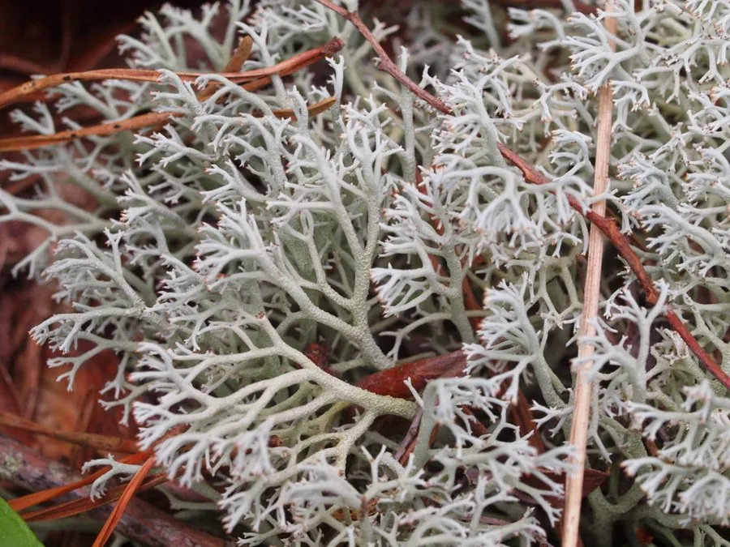

真菌 · 真菌界
石蕊 Cladonia rangiferina

地衣的一种，灰白色分枝如小灌木，成片覆盖在苔原和北方林地上，是驯鹿越冬的重要食物，也被称为“驯鹿苔”。
- 分类
- 门子囊菌门纲茶渍纲目茶渍目科石蕊科属石蕊属
- 栖息环境
- 苔原、北方针叶林和山地林地的地面，常成片覆盖贫瘠土壤
- 地理分布
- 北极和高山地区，中国东北、内蒙古和青藏高原有分布
- 保护级别
- 暂无评估（IUCN 未评估，中国未列入重点保护名录）
物种志
石蕊是地衣，由子囊菌与藻类共生形成，不是单一的蘑菇。它的地衣体呈灰白色至灰绿色，由基部鳞片和向上分枝的果柄组成，果柄细长、多次分枝，形成疏松的小灌木状丛，高 5–10 cm；分枝末端常带褐色的小点（子囊盘）。干燥时质地脆硬，遇水后变软。
石蕊多生于苔原、北方针叶林和山地林地的地面，常成大片覆盖在贫瘠的土壤和岩石上，在北极和高山地区分布广泛，中国东北、内蒙古和青藏高原有分布。它耐寒耐旱，生长极其缓慢，是驯鹿越冬的重要食物，因此被称为“驯鹿苔”；但它本身营养价值不高，驯鹿还需取食其他地衣和植物。石蕊也是传统药材和天然染料来源，采集时要注意保护脆弱的地衣群落。
形态与习性
- 分类地衣，由子囊菌与藻类共生形成
- 地衣体灰白色，果柄细长多分枝，高 5–10 cm
- 子囊盘分枝末端带褐色小点
- 生境苔原、北方针叶林和山地林地的地面
- 生态作用驯鹿越冬的重要食物，被称为“驯鹿苔”
- 生长速度极其缓慢，采集后恢复困难
- 用途传统药材和天然染料来源
趣味知识
- 石蕊是地衣，由真菌与藻类共生形成，不是单纯的蘑菇。
- 它灰白分枝如小灌木，成片覆盖在苔原和林地上。
- 石蕊是驯鹿越冬的重要食物，因此被称为“驯鹿苔”。
- 石蕊生长极其缓慢，采集时要保护地衣群落。